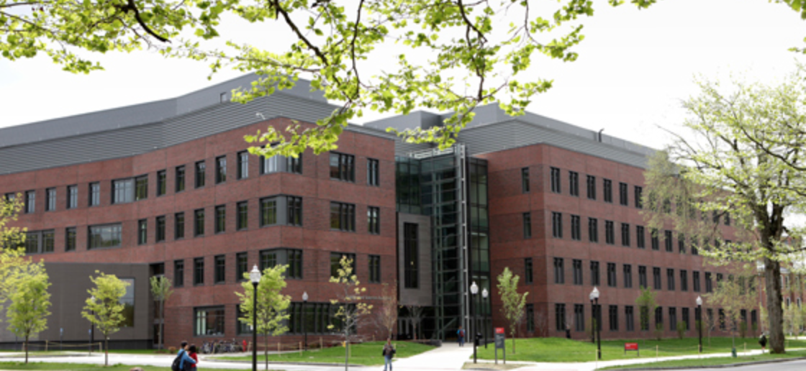
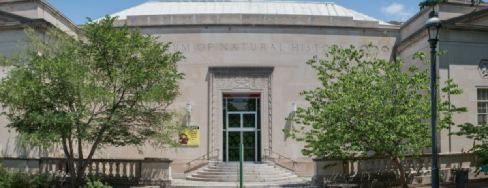

UMass Amherst Integrated Sciences Bldg

The 157,000 square foot Integrated Sciences Building,
which opened in 2009 at a cost of $114.5 million, integrates life and chemical sciences, including:
85,000 square feet of modern classrooms and laboratories for basic and advanced courses in chemistry, biochemistry, and biology;
a 300-seat auditorium;
and flexible research laboratories for life sciences research teams.
In addition, the high-performance design incorporates many environmentally friendly and energy-saving green-building techniques
Springfield Science Museum

The Springfield Science Museum, founded in 1859 in City Hall,
officially opened in 1899 in a classical revival building,
expanded in 1932 with an Art Deco addition, and expanded again
in 1970 with the Tolman addition that included a public observatory.
In 2004, the Welcome Center was added to the Science Museum to serve
as the main entrance to the entire campus. The Science Museum houses
permanent collections of Natural Science, Anthropology and Physical Science.
The Science Museum’s Seymour Planetarium consists of the historic Korkosz Starball,
now the oldest operating star-projector in the United States.